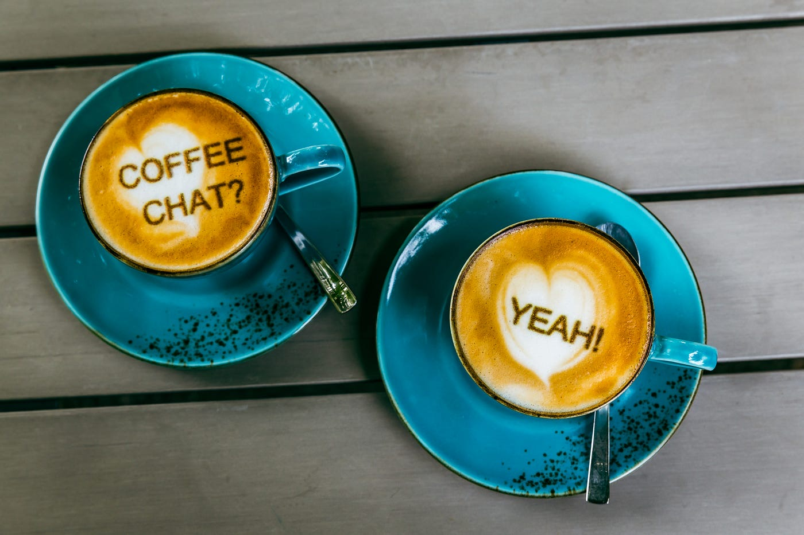
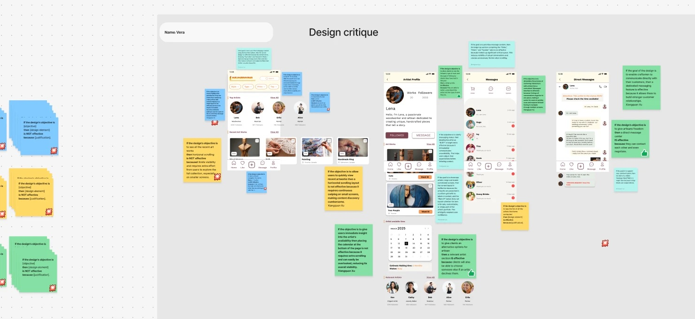

Sipping, Chatting, and Learning
May 31, 2025
My first week at the internship was a mix of excitement, learning, and… a lot of coffee chats ☕.
Before this, I had never done a coffee chat in my life. But I’ve learned that in North America, networking is a huge part of professional development. Thankfully my mentor encouraged me to connect with experienced people across the company, and even recommended a few names to start with. I’m really grateful for that 🙏 It made the whole thing a lot less intimidating.
So over those weeks I made it a goal to reach out to people in different roles: designers, researchers, product managers. I’m so glad I did.
Those informal chats gave me a chance to hear real stories:
- how people got started
- how their roles evolved
- what lessons they’ve learned
Everyone I spoke to was open and generous with their time. It made me realize how many different paths there are in this field, and how much there is to learn from other people’s experiences.
Besides the coffee chats, I also joined a few weekly meetings. It was my first time sitting in a real design team environment, and I was honestly amazed by how efficient and focused everyone was.
During a feedback session, I watched the team leave thoughtful, detailed suggestions in a very short time. It reminded me of a project I did last semester, where I shared a public design link and asked my classmates to leave sticky notes with visual and functional feedback. That had been genuinely helpful, but watching experienced designers give fast, sharp feedback in real time is another level.

During the meeting, our team gave equally valuable feedback in about ten minutes. I’m genuinely impressed by the designers’ eye for detail and how efficiently they offer constructive suggestions. It’s inspiring to see that level of care and collaboration in action.
This week also made me rethink what “user experience” really means. It isn’t just about functionality. It’s about how a user feels at first glance. Details matter. And working with a team that can spot those details and suggest improvements on the spot is something I really admire, and want to learn to do myself.
☕ A few things that helped me with coffee chats (still figuring it out!)
I’m definitely not an expert, but here are a few things that helped me feel more comfortable reaching out to people:
- Be kind and polite when reaching out. A quick intro about who you are and why you’d love to connect makes it feel more genuine.
- Do a tiny bit of homework. A quick look at their role or projects helps the conversation feel thoughtful, and not like you showed up with zero clue. I try to come up with one or two questions that relate to their work.
- Have one or two open-ended questions in mind. Questions like “What do you enjoy most about your work?” or “What’s something you wish you knew when you started?” often lead to great stories.
- Don’t overthink it. It’s not an interview. Some of the best conversations happened when we ended up talking about weekend plans or favourite snacks.
- Follow the unexpected. Sometimes the most helpful insights come up when the chat goes in a direction you didn’t plan.
Honestly, I’m still learning how to do this well, but every chat has made me a little braver and a lot more inspired.